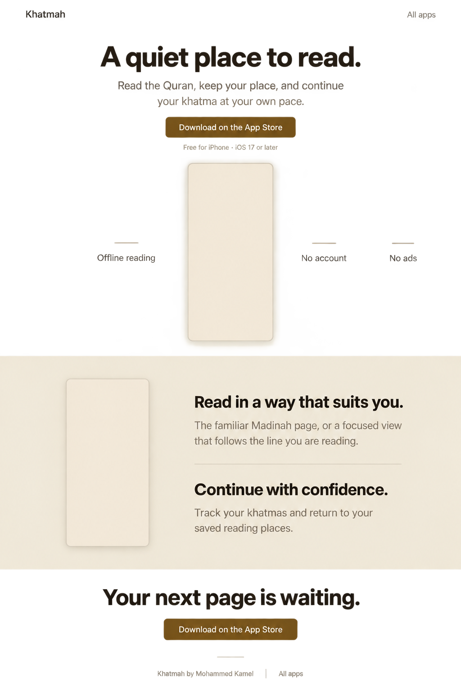
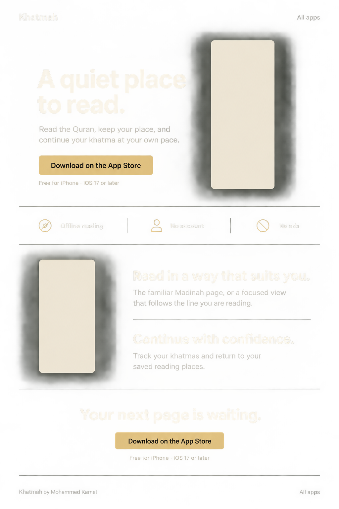
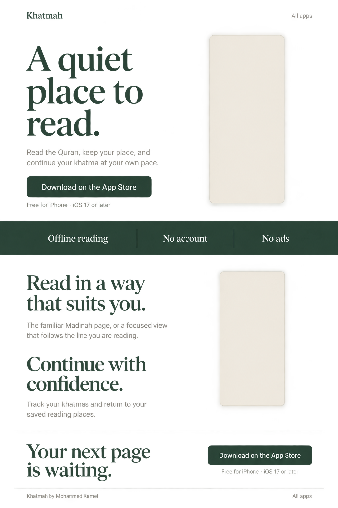

Three ways to introduce Khatmah.
Each proposal uses the same focused product story and an App Store download. The layouts explore how Khatmah can sit alongside Maakdown and Polytray while keeping its own character.
Design review only. The finished marketing page has not been implemented. App screens below are unchanged release captures placed over generated layout concepts.
Current direction: Quiet editorial has been refined with Khatmah’s parchment, ink, and gold palette, genuine 1.1 still images in official Apple device bezels, and English/Arabic language switching. Open the current responsive proposal.
Verified App Store listing · Public release 1.0.1, checked 23 September 2026.
1 · Warm paper
Open the responsive Warm paper preview
The closest fit to Maakdown: a centered introduction, warm paper, a quiet gold action, and an uncomplicated product story. Recommended for the strongest family resemblance.


Mobile plan: keep the centered introduction, then stack screenshots and benefits. All media retains its original aspect ratio.
2 · Ink and gold
Open the responsive Ink and gold preview
A dark sibling to Polytray: a strong split hero, warm gold action, and a compact row of practical benefits. The website theme does not imply a dark-mode app feature.

Mobile plan: headline and download first, followed by the reading screenshot; the feature row becomes a short vertical list.
3 · Quiet editorial
Open the responsive Quiet editorial preview
The most distinctive direction: spacious serif headings, forest green accents, and open page sections. It feels more like a reading companion while preserving the same download flow.

Mobile plan: shorten the headline’s line breaks, stack the hero, and keep the green benefit band as a calm transition.
Shared copy and genuine app media
A quiet place to read. Read the Quran, keep your place, and continue your khatma at your own pace.
Download on the App Store. Free for iPhone · iOS 17 or later.
Offline reading · No account · No ads.
Read in a way that suits you. The familiar Madinah page, or a focused view that follows the line you are reading.
Continue with confidence. Track your khatmas and return to your saved reading places.
Your next page is waiting. Download on the App Store.
Navigation is limited to the App Store and All apps. The final page will use the published app icon and reviewed screenshots; the review images are not production UI.